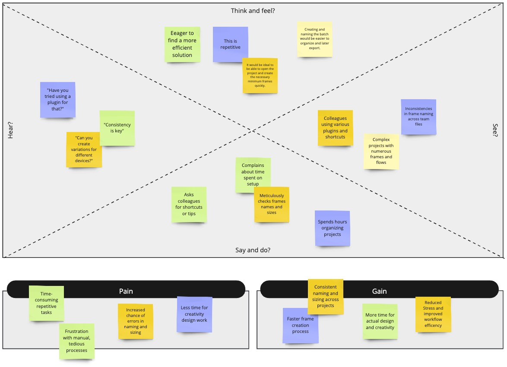

Batch Frame Creator: Streamlining Figma Workflows
As a UX designer, I often found myself creating multiple frames in Figma for complex user flows. This repetitive task highlighted a gap in Figma's native functionality, sparking the idea for the Batch Frame Creator plugin.
Discovery & Problem Statement
Identifying the need
During a typical workday, I observed a colleague's frustration with manually creating numerous frames. This observation led to a crucial realization:
Figma lacked a built-in solution for batch frame creation.
Tracking
During this process, I also wanted to estimate the time it would take a user to create frames, as
well as name and organize each one.
After some testing, I estimated that at least 1+ seconds are needed to create frames (applying/using
figma templates) and that at least 2 or more seconds are needed when trying to create a frame from 0.
Not to mention that the process of naming, or setting dimensions to each artboard will depend on the
user's expertise or if they were duplicated.
Market Research
Before diving into development, I conducted a thorough search within the Figma community. While some plugins addressed similar needs, none fully met the specific requirements I had in mind.
Empathy Mapping
To gain deeper insights into designers' needs, I created an empathy map. This exercise revealed key pain points:
This exercise revealed key pain points:
- Time lost on repetitive tasks
- Frustration with manual frame creation
- Desire for consistency in large projects
Ideation & Conceptualization
Feature Brainstorming
Drawing from the empathy map insights, I sketched out initial ideas for the plugin. These low-fidelity prototypes helped visualize potential features and user interfaces.

Effort Matrix
To prioritize features for the MVP, I employed an effort matrix. This tool was instrumental in balancing user value against development complexity, ensuring a focused and achievable first release.
Design & Prototyping
Iterative UI Development
The plugin's interface underwent several iterations. Each version refined the layout and functionality based on:
- Personal testing
- Informal feedback from colleagues
- Usability considerations
MVP Definition
Guided by the effort matrix, I defined a set of core features for the initial release, focusing on delivering immediate value to users.
Testing & Refinement
Peer Review
Throughout the development process, I shared progress with a small group of designer friends. Their feedback was invaluable, leading to UI adjustments and feature enhancements.
Performance Validation
To quantify the plugin's impact, I created a comparative chart showing the efficiency gained over manual frame creation. This data-driven approach helped validate the plugin's value.
Launch & Continuous Improvement
Community Release
After refining the plugin based on initial feedback, I released it to the Figma community. This launch marked the beginning of a new phase: gathering wider user feedback and identifying areas for improvement.
Iterative Updates
Post-launch, I've continued to refine the plugin, addressing bugs and incorporating user suggestions. This ongoing process ensures the plugin remains relevant and useful.
Reflection & Future Directions
Key Learnings
- The importance of user-centered design, even in tool development
- The value of rapid prototyping and iterative development
- The power of community feedback in product evolution
Next Steps
Moving forward, I'm actively collecting community feedback to guide future updates. The goal is to continually enhance the plugin's functionality while maintaining its core simplicity and efficiency.
Conclusion
The Batch Frame Creator project exemplifies how identifying a common pain point can lead to a
valuable tool for the design community. By applying UX principles to the development process itself, I
was able to create a plugin that not only solves a specific problem but also enhances overall workflow
efficiency for Figma users.
This journey from concept to community-used plugin underscores the importance of empathy, iterative
design, and continuous improvement in creating impactful design tools.